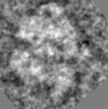
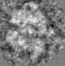
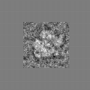
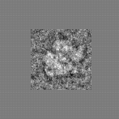
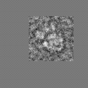
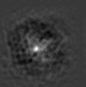

Welcome to the SPIDER Tutorial. The following pages will take you on a brief self-guided tour of the image-manipulating abilities of the SPIDER image processing software program. Each operation is documented here with both a step-by-step procedure and the images produced by it. By creating the image that is documented in the Appendix, you can start right away--no other images are necessary for most operations documented here.
For more information on the specific options and choices of parameters within each operation, use the "Manual of Spider Operations".1.1 Starting SPIDER
SPIDER is a command-driven program. To start a session, open a window and type "spider". A Welcome notice appears which defines the exact version and release of the program you are running. Next, you will see the query
.PROJECT/DATA CODE: SEC/80S[Please note that the query by the computer is always preceded by a period, so that it's easily distinguished from other messages. The interpretation of the user response, in this case "SEC/80S" is usually case sensitive.]
The codes are used to define the files that will be accessible by the program in this session. The DATA CODE is a three-letter sequence that will be the assumed default extension of image files (or document files, i.e., files containing lists of important numbers to be "transported" from one operation to another). These may either be input files, or newly created output files. For example, an existing file named RAW004.80S can be referred to in above session as "RAW004". If the user types "WIN004" in response to the question "OUTPUT FILE:", then a file named "WIN004.80S" will be created.
[You can skip the following explanation of the project code in the initial training session. It will have no importance until you come to Section 6. For the time being, just enter the data code only -- the project code will be the same by default.]
Similarly, the PROJECT CODE is a three-letter sequence that will be used as default extension of files that define an entire batch of operations: these are called "procedure files". In the above example, "SEC" might be a mnemonic referring to a project that seeks to reconstruct the 80S ribosome-Sec61 complex. If operations to perform two-dimensional alignment are stored in a file named "ALIGN.SEC", then simply typing "@ALIGN" will refer to the desired file, and will be understood as a request to execute operations stored there.
[Note that there is a way to switch to another choice of "DATA CODE" and "PROJECT CODE": at any ".OPERATION:" prompt, just type "NC" (for "New Codes"), and the program will come back to the initial prompt ".ENTER PROJECT/DATA CODE:".]
After the DATA CODE (and the PROJECT CODE) have been entered, the system comes back with the standard prompt ".OPERATION:". Here it expects one of the operations listed in the SPIDER manual defining image processing operations.
1.2 Looking at the Image with WEBIn the course of the session, you need to look at the resulting images. For this purpose, you open another window on your terminal. Position and size the SPIDER window and the WEB window in such a way that you can see them both without obstruction. Now start WEB for the particular image data you want to view by typing "web 80s &", i.e., "web" followed by the DATA CODE defined at the beginning of the SPIDER session. This operation starts the WEB graphics user interface, that will allow you to display images using self-explanatory point-and-click operations. However, a help function is also available to explain the more complex interactive operations of WEB in detail.

FIGURE 1. The original images (dimensions 75X75) to be manipulated. SAM001 (left) was created from the example procedure in the Appendix. SAM002 (right) is an image of the 70S ribosome from E. coli obtained by cryo-electron microscopy. You may substitute it by your own image.
1.3 Two-dimensional (2D) and three-dimensional (3D) images in SPIDER
SPIDER can operate on both 2D and 3D images. The file formats permits creation of one-dimensional (1D) images as well, but there are very few operations that operate on 1D data, thus they will not be discussed in this tutorial. A 2D image is defined by its x,y dimensions. x, the width of the image, is stored as the number of sampling points and is always refered to as NX. y, the height of the image, is stored as the number of horizontal rows and is refered to as NY. A 3D image can be thought of as a stack of 2D images (or slices), and the 2 dimension is stored as the number of slices and refered to as NZ.
Section 2, 3 and 4 of this tutorial are devoted to processing of 2D imagaes. In section 5 all operations introduced so far are reviewed for suitability in three dimensions and if a given operation has a different meaning or a different version for 3D data, it is decribed in more details.
2. PROCESSING PREVIOUSLY CREATED
IMAGES
2.1 'MA' --The Masking
Operation
Masking allows superfluous information in the image, normally at the periphery, to be deleted. 'MA' applies a circular mask, but there is also an option that allows an arbitrary shape to be used as mask.
2.1.1 External masking
EXAMPLE: Masking an Image
.OPERATION: MA ;Use the MA operation
.INPUT FILE: SAM002 ;Image to be masked
.OUTPUT FILE: MAS002 ;Name of masked image
.OUTER &INNER RADII: 25,0 ;Radii, in pixels,
;beyond which image
;will be masked
.(D)ISK,(G)AUSSIAN OR
(T)RUE GAUSSIAN: G ;Type of mask used
.(A)V, (P)REC AV, (C)IRCUMF,
OR (E)XTERNAL: P ;Type of background
.MASK CENTER COOS: 38,38 ;Coordinates of the
;mask center
.HALFWIDTH: 5 ;Halfwidth for Gaussian
;mask only
The preceding procedure will create the masked image seen in figure 2a. Note the soft transition created by the Gaussian falloff.
2.1.2 Internal masking
EXAMPLE: Masking an Image
.OPERATION: MA ;Use the MA operation
.INPUT FILE: SAM002 ;Image to be masked
.OUTPUT FILE: MIN002 ;Name of masked image
.OUTER &INNER RADII: 0,25 ;Radii, in pixels,
;beyond which image
;will be masked
.(D)ISK,(G)AUSSIAN OR
(T)RUE GAUSSIAN: G ;Type of mask used
.(A)V, (P)REC AV, (C)IRCUMF,
OR (E)XTERNAL: P ;Type of background
.MASK CENTER COOS: 38,38 ;Coordinates of the
;mask center
.HALFWIDTH: 5 ;Halfwidth for Gaussian
;mask only
2.2 'IP'--The Interpolation
Operation
An image can be enlarged or reduced for clarity of display by interpolating it onto a grid with different dimensions. For this Guide, the two sample images were enlarged so that the processing performed on them would be seen more clearly. 'IP' is especially useful for enlarged display of images that result from averaging.
EXAMPLE: Interpolating an Image
.OPERATION: IP ;Use the IP operation
.INPUT FILE1: SAM001 ;Image to be enlarged
;or reduced
.OUTPUT FILE: INT001 ;Name of new image
.ENTER DIMS NX,NY: 128,128 ;Size of output image
[Here, DIMS refers to the dimensions of the image which are
expressed as NX, NY. This corresponds to the size of the image
in pixels: NX = the number of sampling points, or vertical
columns (i.e., the width of the image); NY = the number of
horizontal rows (i.e., the height of the image). For example, an
image of dimensions NX = 40, NY = 50 corresponds to a rectangle
with a width of 40 and a height of 50.]FIGURE 3. The original 75X75 pixel images shown in Fig. 1 have been enlarged. When the images are enlarged by a non-integer ratio, as in this example, partial loss of information will occur. When the image size is reduced, some information will be always lost. For an integer enlargement of images, operation 'FP' is recommended. INT002 was computed from SAM002, the same way as INT001 was from SAM001.
2.3 'RT'--The Rotate Operation
This operation allows the image to be rotated within the frame. By default, rotation is with respect to a center at (NX/2 + 1, NY/2 + 1). Rotation angles can be positive or negative: the positive direction is considered counterclockwise, by convention; the negative direction is clockwise.
During the course of an alignment procedure, the 'RT' operation will utilize the rotation angles obtained by orientation search to rotate the particles into alignment with the reference.
EXAMPLE: Rotating an Image
.OPERATION: RT ;Use the RT operation
.INPUT FILE: INT001 ;Image to be rotated
.OUTPUT FILE: ROT001 ;Name of new image
.ROTATION ANGLE: 130 ;Angle of rotation in
;degrees (+/-)
FIGURE 4. Rotated images. Note that a "new" background is automatically created to replace the voids in the four corners created by rotating the image. That background will have a value equal to the mean of all pixels of the unrotated image. However, note that there is also an option that allows you to specify the background value (by 'RT B').
2.4 'SH'--The Shift Operation
The image is shifted with respect to the frame of reference. The amount and direction of shift is specified by the x and y components of the shift vector. Shift vector components can be either positive or negative. According to the coordinate system convention, the origin is at the upper left, so positive x-direction is to the right, positive y-direction is down.
EXAMPLE: Shifting an Image
.OPERATION: SH ;Use the SH operation
.INPUT FILE: ROT001 ;Image to be shifted
.OUTPUT FILE: SHF001 ;Name of new image
.SHIFT COMPONENTS: -15,-10 ;X- and Y- components of the
;shift vector, (+/-)
NOTE: 'SH F' option allows non-integer shift vectors to be
applied.FIGURE 5a. Shifted Images. Notice that shifted image data "wrap around" to the opposite sides of the image.
2.5 'RT SQ'-- Rotate -
image or volume, Shift, use Quadratic interpolation
Changes the scale, rotates and shifts image circularly. Rotates a picture counter-clockwise around the center (NX/2 + 1, NY/2 + 1). (Negative angles = clockwise).
EXAMPLE: Rotating and Shifting an Image
.OPERATION: RT SQ ;Use the RT SQ operation
.INPUT FILE: INT001 ;Image to be rotated
.OUTPUT FILE: RTS001 ;Name of new image
.ROTATION ANGLE, SCALE: 130 ;Angle of rotation in
;degrees (+/-)
.SHIFTS IN X AND Y:-15,-10 ;the X and Y shift values
FIGURE 5b. The result of 'RT SQ' operation. Notice that the difference between the 'RT SQ' operation and the 'RT', 'SH' operations is that in the image resulting from the 'RT SQ' operation no "new" background is created.
2.6 'WI'--The Windowing Operation
Images may have to be windowed (i.e., a portion cut out) at several stages of an investigation: the particle of interest is windowed from a large field; once masked and aligned, it could again be windowed to save computer storage space; or a large image may have to be windowed to a size appropriate for certain operations. For example, Fourier operations use a mixed-radix algorithm, and dimensions that involve large prime numbers may present a problem (see 'FT' manual for details).
EXAMPLE: Windowing an Image
.OPERATION: WI ;Use the WI operation
.INPUT FILE: SHF001 ;Image to be windowed
.OUTPUT FILE: WIN001 ;Name of new image
.ENTER DIMS NX,NY: 110,110 ;Size of windowed area
.TOP LEFT COOS: 2,2 ;Coordinates where the
;top left corner of the
;new image will be
.OPERATION: WI ;Use the WI operation
.INPUT FILE: SHF002 ;Image to be windowed
.OUTPUT FILE: WIN002 ;Name of new image
.ENTER DIMS NX,NY: 110,110 ;Size of windowed area
.TOP LEFT COOS: 2,9 ;Coordinates of the point
;in the old image where
;the top left corner of
;the new image will be
NOTE: The top left corner of an image has coordinates 1,1 (not
0,0 !) by convention. 
2.7 'PD'--The Padding Operation
Padding an image places the image into a larger field of user-specified dimensions and background. This would be useful, for example, in preparing the image for cross correlation with another image, so as to avoid wrap-around overlaps.
EXAMPLE: Padding an Image
.OPERATION: PD ;Use the PD operation
.INPUT FILE: SAM001 ;Image to be padded
.OUTPUT FILE: PAD001 ;Name of new image
.ENTER DIMS NX,NY: 150,150 ;Size of final image
.AVERAGE(Y/N),(C)IRC OP: Y ;Choice of background
;density: use average
.TOP LEFT COOS: 38,38 ;Coordinates of image
;placement within
;padded image

FIGURE 7. Here, padding has been used to produce an image twice the size of the original. By placing the average of the windowed area into the region around it, we have minimized the density step at the border. This choice of background prevents artifacts from occurring in the Fourier transform of the padded image. (By answering 'N' to the question "average (Y/N)" you would indicate that you wish to supply the background value yourself -- in that case a solicitation for that value would follow.)
2.8 'MR'--The Mirroring Operation
By this operation, a mirror-image of the input image is created. The image is reflected across the vertical line or the horizontal line running through the image center at (75,75). This might be useful if the handedness is not certain.
EXAMPLE: Mirroring an Image
.OPERATION: MR ;Use the MR operation
.INPUT FILE: PAD001 ;Image to be mirrored
.OUTPUT FILE: MIR001 ;Name of new image
.MIRROR AT (X) OR (Y)-AXIS ;the mirror axis. X = interchange
(DEF=Y): Y ;rows, Y=interchange columns
 
FIGURE 8. This picture is simply a mirror-reflection of the previous picture with respect to a line parallel to Y running through the point ((INT(NX/2) + 1, INT(NY/2) + 1).
2.9 'BC'--The Box-Convolution Operation
Central to the box convolution operation is an algorithm that replaces the value of each pixel by the average of a small rectangular area around it. If the 'L' (low-pass filtering) option is chosen, 'BC' results in an image that is a mixture between the box-convolved image and the original image. If the 'H' option is chosen, 'BC' subtracts the box-convolved image from the original image. The resulting image is a high-pass filtered version of the input image. It can again be mixed with the input image.
The filter weight is used to specify the proportion of the filtered to the unfiltered image to be mixed to form the output image. Filter weight = 1 means output is the pure filtered image.
EXAMPLE: Box-Convoluting an Image
.OPERATION: BC ;Use the BC operation
.INPUT FILE: INT002 ;Image to be convoluted
.OUTPUT FILE: BOX002 ;Name of new image
.(H)IGH-PASS/(L)OW-PASS/(T)HRES/(D)IVIS/(V)AR: L
;Type of filtration, in
;this case low-pass
.LOCAL AREA SIZE COL,ROW: 5,6 ;Size of convolution box
.FILTER WEIGHT (0.0->1.0): 1 ;Mixing factor
FIGURE 9. Note the fuzziness of the image. Fine detail and surrounding noise are suppressed, but the particle stands up better from the background.
2.10 'CE'--The Contrast Enhancement Operation
'CE' operates by stretching the density variations on the basis of the image histogram. Hence, this operation can be used to enhance the overall contrast, by sacrificing the exact representation of features whose densities are in the top or bottom range. The output image will always be in the range 0...2.
EXAMPLE: Enhancing Contrast of an Image
.OPERATION: CE ;Use the CE operation
.INPUT FILE: BOX001 ;Image to be enhanced
.OUTPUT FILE: CON001 ;Name of new image
.(S)TRETCH, (H)ISTOGRAM EQUALIZE OR
(L)OCAL? (S/H/L): S ;Choice of contrast
;enhancement algorithm,
;in this case linear
;contrast stretching.
.(S)INGLE/(A)UTOMATIC/(D)OUBLE MAPPING: A
;Stretching mode.
;Automatic means that the
;top and bottom cutoff
;points are determined
;from the percentage of
;pixels specified.
.INTEGRAL THRESHOLD PERC.: .5 ;Percent of pixels to be
;chopped off at top and
;bottom of histogram
.PLOT RESULT HISTOGRAM: Y ;If yes, the histogram of the stretched
;image is to be computed
.BOTTOM DENSITY VALUE: .5 ;density value to be mapped to 0.0
.TOP DENSITY VALUE: 1.2 ;density value to be mapped to 2.0
FIGURE 10. While Box Convolution was seen to be effective, a much more dramatic effect was achieved here with contrast enhancement. The particle stands out definitively against the background, albeit with a complete loss of information in the areas affected by the density truncation. Note, for instance, that the fringe surrounding the particle (which is caused by the contrast transfer function of the elecetron microscope) has become uniformly black.
2.11 'ED'--The Edge Detection Operation
This operation will create a file containing only lines delineating edges detected in the image. This is similar to the 'FC' (file contour) operation, except that the contours represent lines of steep density changes, not lines of equal density.
EXAMPLE: Detecting Edges in Images
.OPERATION: ED ;Use the ED operation
.INPUT FILE: CON001 ;Image to which edge
;detection should be
;applied
.OUTPUT FILE: EDG001 ;Name of new image
;containing contours
.FILTER NUMBER (1/2/3/4): 4 ;Specify type of filter
;(see note)
.THRESHOLD (1)LOW/(2)MEDIUM/(3)HIGH: 3
;Density variation
;threshold
NOTE: Type of filter varies with different images, depending on the
S/N (signal-to-noise) ratio and the crowdedness of edges:
Filter 1--very high S/N ratio (typical for images resulting
from averaging low-pass filtering).
Filter 2--medium S/N ratio, many edges expected.
Filter 3--medium S/N ratio, few edges expected.
Filter 4--low S/N ratio (typical for raw data).
FIGURE 11. Compare this to the input images CON001 and CON002 in Figure 10. Lines along which the density gradient is steepest are computed by the program.
2.12 'AS R'--The Average + Variance Operation
'AS R' computes the average image and variance image from two or more original images. The variance image shows the areas where pixels vary strongest among the image set. This is useful in determining how uniform the particles are, and how significant certain ultrastructural features are that show up in the average image.
It is important to remember that all of the files must begin with the same file series name, e.g. SAM001, SAM002, ..., SAM009, SAM010. Also, even though the name of the first image is given after the prompt ".FIRST FILE:", it must also be included as part of the file numbers given in answer to ".ENTER FILE NUMBERS:", otherwise it will be skipped in the computation of average and variance images.
In the following example the set of images used is from an experiment in which 70S ribosomes are visualized.
EXAMPLE: Averaging A Series of Images
.OPERATION: AS R ;Use the AS operation
.FILE PREFIX OR TEMPLATE: SAM*** ;First image of series
.ENTER FILE NUMBERS: 2-10 ;Numbers in a series
;to be averaged
.ALL, ODD-EVEN (A/O):A ;all images will be added
.AVERAGE FILE: AVG002 ;Name of average file to
;be computed
.VARIANCE FILE: VAR002 ;Name of variance file
NOTE:
(1) If the average file already exists, then the system will assume that you want to add the current image set to this file, and will ask for the number of images already summed.
(2) If the ODD-EVEN option is selected, two average images and corresponding variance images are created, one for the odd-numbered, one for the even-numbered files. This option is used for resolution tests where two independent averages are compared.
(3) For negatively stained data the mean of images is irrelevant. In this case operation 'AS' can be used. It subtracts the mean from every image in the input series before calculation of the average map. Thus the average map produced by 'AS' will have a zero mean.
If 'AS' is applied to images with relevant average the resulting variance map will be incorrect (the variance values will be too small).
FIGURE 12. Average image and Variance map resulting from averaging the 9 images in the top row. The average image (left) has considerably less detail than any of its constituent images, but it is more representative of a "typical" particle. The variance image (right) shows specks of high variance within the area of the particle. These may indicate regions most strongly affected by the variation in projection direction, or actual changes in molecular conformation.
2.13 'FC'--The File Contour Operation
Contouring an image creates isolines at discrete density values within an image. These are generated with a user-specified number of levels. The actual contouring levels used are generated by the program. The 'FC E' operation allows the user to specify both the base density and the density increment between successive contour lines. Note that for 'FC E', contouring does NOT occur at densities less than zero. The 'AR' operation may be used to make the image definitely positive by adding a constant to each pixel (see the SPIDER documentation for more information).
As a preparation for 'FC', the image must be expanded since the contour lines occupy entire pixels. Otherwise the contours will look very ragged.
EXAMPLE: Contouring an Image
.OPERATION: IP ;Use the IP operation
.INPUT FILE1: AVG002 ;Image to be enlarged
.OUTPUT FILE: IPL002 ;Name of new image
.ENTER DIMS NX,NY: 200,200;Size of output image
.OPERATION: FC ;Use the FC operation
.INPUT FILE: IPL002 ;Image to be contoured
.OUTPUT FILE: FIC002 ;Name of new image
.NO. OF CONTOUR LEVELS: 4 ;Number of density
;levels delineated
.OVERWRITE (Y/N): Y ;Superimposes contours
;onto image
.(W)HITE,(B)LACK,OR (A)DJUSTED CONTOURS: A
;Appearance of contour
;lines (adjusted means the
;appearance switches from
;lines on black background,
;black on white background)
NOTE:
(1) Rule of thumb: for the image expansion by 'IP', use a factor of 3 to 4, depending on the complexity of features.
(2) In the simple 'FC' operation, the points of highest and lowest density are both counted as contour levels. In the above example, only 2 contour lines are visible even though 4 was specified as the number. The pixels at either extreme of the density range show up as single "contour points".
FIGURE 13. A contoured image. This operation is especially useful for the display of average images.
2.14 'SU'--The Subtract-Images Operation
One or more images may be subtracted from an initial image pixel by pixel, using this operation. To end the subtraction series, place an asterisk (*) in response to the recurring prompt ".SUBTRACTED FILE:" .
EXAMPLE: Subtracting and Copying Images
.OPERATION: SU ; Use the SU operation
.INPUT FILE: CON001 ; Name of image from which other
; image will be subtracted
.SUBTRACTED FILE: CON002 ; Name of image to be subtracted
.OUTPUT FILE: SUB001 ; Output file
.SUBTRACTED FILE: * ; Terminates solicitation
; of additional images
; to be subtracted
FIGURE 14. The image CON002 was subtracted pixel-by-pixel from CON001 (see Fig 10). In a real-world application of 'SU', one image might be the average of particles labeled with a small ligand, the other the average of unlabeled control particles. In that case, the positive difference would show the position of the ligand molecule.
2.15 'MU'--The Multiply-Images Operation
The image created by 'MU' has each pixel from one image multiplied by the corresponding pixel from the other image(s). Thus, the resultant image appears very similar to one image where the pixels have a value of 1 in the other image.
A whole series of images can be multiplied together; the '*' inserted after the ".MULTIPLIER FILE:" prompt ends the MU operation.
EXAMPLE: Multiplying Images
.OPERATION: MU ; Use the MU operation
.INPUT FILE: CON001 ; Name of first image
.MULTIPLIER FILE: CON002 ; Name of second image
.OUTPUT FILE: MUL001 ; Output file
.MULTIPLIER FILE: * ; Terminates solicitation
; of additional images
; to be multiplied
FIGURE 15. Result of Multiplying images. Note the extreme effect of multiplying where the density in one image is very low ("absolute veto effect").
2.16 'SQ'--The Square-Image Operation
This operation mathematically squares the value of each pixel in the image, and has a non-linear contrast-enhancing effect areas with high density (white in our display) are enhanced, those with low density (dark) remain unchanged and those with medium density (grey) are pushed more toward low density.
EXAMPLE: Squaring Images
.OPERATION: SQ ;Use the SQ operation
.INPUT FILE: CON002 ;File to be squared
.OUTPUT FILE: SQR002 ;Name of squared image
FIGURE 16. The contrast is selectively increased when the file is squared; small density variations are accentuated when they occur in the high density range.
2.17 'CC N'--The Cross-Correlation Operation
The 'CC N' operation computes the normalized cross-correlation function of two pictures by using the Fourier-transform relationship. The dimensions of the two pictures must be the same; however, the dimensions need not be powers of two (see 'FT' for restrictions).
The CCF is a measure of the degree of match (integrated cross-product) of two images as a function of their relative translation. For example, when two squares are superimposed, they match perfectly. As they are moved farther and farther apart, in any direction, the degree of match decreases. Their cross-correlation will vary continuously and its value will depend on the distance, and the direction in which they are separated. The two images will be totally unmatched when no part of either square is superposed upon the other.
In the example, we use two images of the ribosome, PAD002 (see Section 2.6) and PAD003. The image PAD003 was created by padding the image SAM003 in to a (150,150) image using 50,30 as top left coordiates; i.e., shifted off the center by +12,-8. .
EXAMPLE: The Cross-correlation Function
.OPERATION: CC N ;Cross Correlation
.INPUT FILE: PAD002 ;the first ribosome picture
.REFERENCE FILE: PAD003 ;the second ribosome picture,
;which is used as the reference
.OUTPUT FILE: CCF002 ;the file which will contain
;cross-correlation function
 FIGURE 17. Display of cross-correlation function computed in above example. The peak (indicating highest correlation) is seen to be shifted by -12, +8, indicating the relative shift of the input images. Note: The sign of shifts convention in section 6.6.
2.18 'AC'--The Autocorrelation Operation
The 'AC' operation computes the autocorrelation function of a picture by using the Fourier transform relationship.
The ACF is simply defined as the CCF of an image with itself. Thus, any inherent symmetry and internal structure of a particle seen in an image will be reflected by its ACF. The ACF pattern is independent of the location of the particle in the image; therefore it allows the relative orientation of particles to be found before their relative shift is accurately known. This, in fact, is how some alignment procedures are designed (see "Single Particle Alignment Using SPIDER").
EXAMPLE: Computing the Autocorrelation Function
.OPERATION: AC ;Autocorrelation operation
.INPUT FILE: PAD002 ;Image to be auto-correlated
.OUTPUT FILE: ACF002 ;the file which will contain
;the auto-correlation coefficients.
FIGURE 18. Display of the autocorrelation function computed in above example. Values of high correlation are shown in white. Due to the inherent peak in the center (that is due to the perfect match of an image with itself for zero shift), contrast is noticeably reduced, and features of the ACF relating to intramolecular vectors are virtually invisible.
Often, the center of the ACF produced by 'AC' will be an extremely high-density area. An extreme contrast situation such as this will obliterate any small density variations elsewhere in the image. Masking the interior will remove these upper-extreme density values, concomitantly mapping the much smaller density variations in the remaining area into the full display range, and thereby enhance the visual data in the periphery of the image. [Masks with arbitrary shapes can be created by using the 'TH M' operation and applied with the 'MM' operation, see manual chapters on 'TH' and 'MM'.]
EXAMPLE: Inside Masking of an Image
.OPERATION: MA ;Mask operation
.INPUT FILE: ACF002 ;Image to be masked
.OUTPUT FILE: MAI002 ;Name of masked image
.OUTER & INNER RADII: 76,7 ;Radii the outer and inner
;mask circles, in pixels
.(D)ISK, (G)AUSSIAN EDGE, OR (T)RUE GAUSSIAN: G
;Type of mask edge: sharp
;cutoff (D), piecewise
;Gaussian(G), or true Gaussian(T)
.(A)V, (P)REC AV, (C)IRCUMF, OR (E)XTERNAL: P
;the background is to be the
;average after masking
.MASK CENTER COOS: 76,76 ;Coordinates of the
;center of the mask
FIGURE 19. Here, by eliminating the peak at the origin, we have made the important features of the antocorrelation function better visible. Compare to Figure 18.
In this section, the Fourier transform will be introduced. A comparison will be made between the transforms of 1) a montage of nine images, and 2) the average of those images padded to the size of that montage. This comparison will demonstrate the convolution theorem and the origin of reflections formed in the Fourier transform of a crystal lattice.
The first operation illustrated in this section will be the montage operation. It is not normally needed for Fourier operations, but this is an appropriate place to illustrate its function.
3.1 'MN S'--The Montage Operation With Scaling OptionImages of a series (i.e., whose names start with the same prefix) can be "bundled up" into a gallery, or montage. The 'MN S' operation not only arranges the images in a gallery, but also scales them so that they will all be in the same density range 0...2. This is particularly important for the display of images of widely differing contrasts and offsets.
Montaging can be accomplished with no space between the images, or with a user-specified space between them. The density of this optional space can also be specified; but it should be between 0 and 2.
EXAMPLE: Montaging an Image Series
.OPERATION: MN S ;Use the MN S operation
.ENTER PREFIX OF FILE SERIES: SAM ;File prefix of images
;to be montaged
.ENTER FILE NUMBERS: 2-10 ;Numbers of images in
;file series to be
;placed in montage
.NUMBER OF PICTURES PER ROW, MARGIN: 3,0
;Number of images per
;horizontal row, size of
;optional margin space
.ENTER MARGIN VALUE: .1 ;value to be put in margins
.OUTPUT FILE: MON001 ;Name of montage created
FIGURE 20a. A montage of the images used to create the average image in Figure 12. In this case, no margin was specified (0 pixels) in the 'MN S' operation.
FIGURE 20b. The average image (Fig. 12) has been padded here to the same size as the montage (Fig. 20a). Figures 21a & b are the Fourier transforms of the images in Figures 20a & 20b, respectively, displayed as power spectra.
3.2 'FT'--The Fourier Transform Operation
The 'FT' operation uses a mathematical expression termed a Fourier series to create a representation of the image in Fourier space. This representation employs a series of sinusoidal waves characterized by their amplitudes and phases. To display a Fourier transform in pictorial form, the 'PW' operation (see below) has to be used: this extracts the amplitudes of the transform and arranges them in their logical two-dimensional order according to their spatial frequencies (reciprocal wavelengths in x- and y- direction). Note, however, that the phases of the Fourier transform are lost in this representation.
The Fourier transform operation is useful in many steps of image processing. When performed on a micrograph, the 'FT' operation followed by 'PW' is equivalent to the use of an optical diffractometer and so can yield information on the quality of the micrograph. It is also useful in elucidating image symmetry and presence of order in ultrastructural studies. An image of a crystal with poor S/N ratio can be Fourier transformed, and the Fourier components representing the repeated structure (reflections) can then be separately back-transformed to generate a relatively noise-free image of the crystal.
In the demonstration examples here, two images are Fourier transformed: the montage of 9 particles (Fig 20a), and a padded version of the image created by averaging those 9 particles (Fig 20b). By making the padded image the same size(225,225) as the montage, a comparison can be made between the transform of the single (average) image and that of a "crystal" (the montage) formed by the images used in the averaging.
EXAMPLE: Padding and Fourier-Transforming an Image
.OPERATION: FT ;Use the FT operation
.INPUT FILE: MON001 ;Image to be Fourier
;transformed
.OUTPUT FILE: FOU001 ;output file which will
;contain the transformed image.
(FOURIER TRANSFORMATION OF THE AVERAGE IMAGE)
.OPERATION: PD ;Pad image to make it
;Fourier-transformable
.INPUT FILE: AVG002 ;Image to be padded
.OUTPUT FILE: BIG002 ;Padded image ready to
;be transformed
.ENTER DIMS, NX,NY: 225,225 ;Dimensions of padded image
.AVERAGE (Y/N), (C)IRCULAR OPTION: Y;Average of image used for
;padding background
.ENTER TOP LEFT COOS: 76,76 ;Coordinates of padded image
;where smaller image is to be
;placed (arbitrary, as long
;as the Fourier phases
;are not considered)
.OPERATION: FT ;Use the FT operation
.INPUT FILE: BIG002 ;Image to be Fourier
;transformed
.OUTPUT FILE: FOU002 ;output file which will
;contain the transformed image.
Note that the Fourier transform of an image is complex-valued, so it cannot be represented in real space. Therefore no image is displayed here.
To display the amplitudes of the Fourier transform, the 'PW' operation is used.
3.3 'PW'--The Power Spectrum Operation'PW' is a companion operation to 'FT': it allows the visual display of the amplitudes in the Fourier transform of an image. The "power spectrum" is normally defined as the square of the amplitudes; in SPIDER, 'PW' creates an image that contains the unsquared amplitudes. The 'PW' operation can only be performed on Fourier data.
In the following example, the two Fourier transforms generated above were both subjected to the power spectrum operation. The two resulting power spectra (Figs. 21a,b) are quite different: the one relating to the single particle image (Fig. 21b) is continuous, the one relating to the montage discontinuous. In the latter case, the discrete amplitudes are seen to lie on a square grid. Closer inspection shows that in these points, both power spectra are in fact identical.
This phenomenon can be explained in terms of the convolution theorem: apart from variations that can be regarded as noise, the montage is the convolution of the averaged particle image with a square grid of single points. Consequently, its Fourier transform is the product of the single-image Fourier transform (Fig. 21b) with the Fourier transform of the single-point lattice, which is again a 2D point lattice (the "reciprocal lattice").
EXAMPLE: The Power Spectrum of a Fourier Transform
.OPERATION: PW ;Use the PW operation
.INPUT FILE: FOU001 ;Fourier data to be converted
.OUTPUT FILE: POW001 ;Name of new image
.OPERATION: MA ;Inside mask is used in
;order to suppress the central
;term better and thus
;visualize the diffraction
;peaks
.INPUT FILE: POW001 ;Image to be masked
.OUPUT FILE: MAI001 ;Name of masked image
.OUTER & INNER RADII:112,3 ;Radius of circular mask
.(D)ISK, (G)AUSSIAN EDGE, OR (T)RUE GAUSSIAN: D
;Type of mask edge
.(A)V,(P)REC AV,(C)IRCUMF,OR (E)XTERNAL: E
;Put user-whose background
;value in masked area
.ENTER BACKGROUND: 0.00
.MASK CENTER COOS: 113,113 ;Coordinates of the
;center of the mask
.OPERATION: PW
.INPUT FILE: FOU002
.OUTPUT FILE: POW002
To see the result clearly, you can use the "WI" operation to window the central part of the power spectrum.
.OPERATION: WI ;Use the WI operation
.INPUT FILE: MAI001 ;Image to be windowed
.OUTPUT FILE: WMA001 ;Name of new image
.ENTER DIMS NX,NY: 120,120 ;Size of windowed area
.TOP LEFT COOS: 53,53 ;Coordinates where the
;top left corner of the
;new image will be
.OPERATION: WI ;Use the WI operation
.INPUT FILE: POW002 ;Image to be windowed
.OUTPUT FILE: WPO002 ;Name of new image
.ENTER DIMS NX,NY: 120,120 ;Size of windowed area
.TOP LEFT COOS: 53,53 ;Coordinates where the
;top left corner of the
;new image will be
FIGURE 21a. WMA001--Central part of power spectrum of the montage in Fig 20a. Note the discontinuity of the image, compared to Figure 21b.
FIGURE 21b. WPO002--Central part of power spectrum of the Fourier-transformed padded average image in Fig 20b. Here the density variations are continuous, yet agree exactly with those of Figure 21a in the discrete lattice points ("reciprocal lattice").
4. CREATING AND EDITING IMAGES
4.1 'MO'--The Modelling Operation
Note that another example for the use of this operation is
documented in the Appendix.
For the next series of images, a base image was created using the
'MO' operation. The image was specified to be of random densities,
between 0 and 1.
EXAMPLE: Creating a Random Image
.OPERATION: Mo ;Use the MO operation
.OUTPUT FILE: MOD001 ;Name of file created
.ENTER DIMS (NX,NY): 128,128 ;Size of image
.(T)(S)(C)(W)(R)(P): R ;Type of image, random
.GAUSSIAN DIST.? (Y/N): N ;Type of distribution
;of pixel values; N results
;in a uniform distribution
;between 0 and 1
4.2 'BL'--The Create-Blank Operation
A blank image is an image with a background of uniform density. There is no inter-pixel variation as there is with the random 'MO' image. This particular blank image was created to demonstrate the following operations: 'IN' and 'PA'.
EXAMPLE: Creating a Blank (Constant Value) Image
.OPERATION: BL ;Use the BL operation
.OUTPUT FILE: BLA001 ;Name of file created
.ENTER DIMS NX,NY: 30,30 ;Dimensions of file
;to be created
.AVERAGE? (Y/N): N ;Type of background
;(Y allows average of
;another, specified
;image to be used)
.BACKGROUND: .5 ;Background density,
Note: Because of their inherent lack of any density variation, blank images cannot be displayed; attempts to rescale it into the range 0...2 would result in division by 0.
4.3 'IN'--The Insert OperationOne image can be inserted into another, larger, image by using 'IN'. The smaller image simply takes the place of the pixels in the larger image.
Note that the new image REPLACES the old pixels--it is not added to them, as in 'PA'. Also, the final image with the insert replaces the original image, so if the original is to be saved, it must be copied first.
EXAMPLE: Inserting an Image Into Another
.OPERATION: CP ;Copy large image
.INPUT FILE: MOD001 ;Image to be copied
.OUTPUT FILE: INS001 ;Name of new image
.OPERATION: IN ;Use the IN operation
.SMALL INPUT FILE: BLA001 ;Image to be inserted
.LARGE INPUT (OVERWRITTEN!) FILE: INS001
;Final image with the
;inserted blank
.ENTER TOP LEFT COOS: 35,35 ;Coordinates of large
;image where blank is
;to be inserted
FIGURE 23. A small blank image (upper left) inserted into a larger image. Note its homogeneity--the pixels of the inserted image replace those of the larger one.
4.4 'PA'--The Patch Operation
Patching an image is similar to inserting an image, in that a smaller picture is placed into a larger one. The main difference, however, which is quite important, is that while 'IN' REPLACES the pixel-densities of the large picture with the smaller one, 'PA' ADDS the pixel-densities of both images together. This can be clearly seen in PAT001 which has an inserted image at the top left, and a patched image at the lower right. Again, the new image overwrites the old one, and therefore it is a good idea to copy the original image before using it.
EXAMPLE: Patching an Image
.OPERATION: CP ;Copy the large image
.INPUT FILE: INS001 ;File to be copied
.OUTPUT FILE: PAT001 ;Name of copied image
.OPERATION: PA ;Use the PA operation
.SMALL INPUT FILE: BLA001 ;Image to be patched
.LARGE INPUT (OVERWRITTEN!) FILE: PAT001
;Image to receive patch
.TOP LEFT COOS: 90,90 ;Coordinates of large
;image where small one
;is to be patched
FIGURE 24. The same small blank image (now lower right) patched into a larger image.
Note that the pixels from both images were added, resulting in a lighter overall appearance.
4.5 'TH'--The Threshold OperationAn image that is subjected to the 'TH' operation has any densities beyond a user-determined value set equal to the threshold. Either an upper or a lower boundary or both can be set.
EXAMPLE: Thresholding Images
.OPERATION: TH ;Use the TH operation
.INPUT FILE: PAT001 ;Image to be thresholded
.OUTPUT FILE: THR001 ;Image with thresholded
;density values
.ALTER (A)BOVE THRESHOLD, (B)ELOW, OR
(C)BOTH SIDES (A/B/C): C ;Thresholding to be done
;on both sides of the
;density range
.UPPER,LOWER THRESHOLD: .6,.4 ;Upper and lower threshold
;to be specified
5.1 MA
Operation works for both 2D and 3D images.
5.2 IP
Operation works for both 2D and 3D images.
5.3 RT 3D
This operation allows the volume to be rotated within the frame. By default, rotation is with respect to a center at ((INT(NX/2)+1, INT(NY/2)+1, INT(NZ/2)+1). The related operation 'RT 3A' allows rotation of of a volume around an arbitrary center. The rotation is specicified by three Euler angles.
5.4 SH
Operation works for both 2D and 3D images.
5.5 WI
Operation works for both 2D and 3D images.
5.6 PD
Operation works for both 2D and 3D images.
5.7 MR
Operation works for both 2D and 3D images.
5.8 BC
Operation works for both 2D and 3D images.
5.9 CE
Operation does not work for 3D data.
5.10 ED
Operation does not work for 3D data.
5.11 AS R
Operation works for both 2D and 3D images.
5.12 FC
Operation does not work for 3D data.
5.13 SU
Operation works for both 2D and 3D images.
5.14 MU
Operation works for both 2D and 3D images.
5.15 SQ
Operation works for both 2D and 3D images.
5.16 CC N
Operation works for both 2D and 3D images.
5.17 AL
Operation works for both 2D and 3D images.
5.18 MN S
Operation does not work for 3D data.
5.19 FT
Operation works for both 2D and 3D images.
5.20 PW
Operation works for both 2D and 3D images.
5.21 MO 3
Creates a 3-D model density distribution.
.MENU:
(B)LANK -- CONSTANT DENSITY
(C)YLINDER -- SET OF CYLINDERS
(H)ELIX -- HELIX OF SPHERES
(HA) -- HELIX OF SPHERES, ADD DENSITITY
(NUM)BERS -- LINE NUMBERS
(Q)UICK -- RANDOM UNIFORM/GAUSSIAN STATISTICS
(R)ANDOM -- RANDOM UNIFORM/GAUSSIAN STATISTICS
(S)INE -- SET OF SINE WAVES
(SP)HERE -- SET OF SPHERES
(SPA) -- SET OF SPHERES, ADD DENSITIES
(SPV) -- SET OF SPHERES, VARIABLE DENSITIES
(T)EST -- 3D SINE WAVE
(W)EDGE -- DENSITY WEDGE
5.22 BL
Operation does not work for 3D data, but a blank volume can be created using MO 3 operation.
5.23 IN
Operation does not work for 3D data.
5.24 PA
Operation does not work for 3D data.
5.25 TH
Operation works for both 2D and 3D images.
6. PROCEDURE MODE OF PROCESSING6.1 Procedure versus Interactive Sessions
In the interactive sesssion, you are able to verify the different processing steps, try out choices of various parameters, and make sure all questions are answered.
For any large-scale project, however, many such steps are required, often to be repeated over a large number of image files. This is no longer practical in the interactive mode. Instead, operations along with answers to the queries are stored in operation files and submitted in the procedure mode of processing.
A "procedure file" is flexible as it allows run-time replacements. In the following section, we will provide an introduction in writing both procedure files. In the course of this introduction, many new features will be covered that have no relevance or importance in the interactive mode of SPIDER covered so far: DO-LOOPs, computed GOTOs, register variables, arithmetic expressions, run-time construction of file names, document files, and string variables.
6.2 How to Create a Procedure File
Choose a text editor and prepare a file that contains the operation stream to be processed sequentially by SPIDER. It is good practice to choose a filename that is descriptive; e.g. ALIGN for a procedure designed to align an image set. Note that the file name extention of this and other operation files should be three characters; it is called PROJECT CODE, and is set at the beginning of the SPIDER session. So a valid name would be 'ALIGN.SEC' if 'SEC' is chosen as project code.
The first lines may be used as comment line. In SPIDER, comment lines are started with ';'. To keep your procedure files organized, put the file name, a short description of its purpose and the date of creation into a comment line. (If necessary, you can continue with additional comment lines, all started with ';'.)
6.3 Preparing and Running a Simple Procedure File
In the first example, we combine the operations from two earlier examples in the interactive session, illustrating the use of the 'IP' and 'RT' operations. We create a file named 'IPRT.SEC'.
;IPRT.SEC 1/5/98 interpolate and rotate
IP
SAM001
INT001
128,128
RT
INT001
ROT001
130.
EN
This sequence is identical to the sequence of computer-solicited text input in the combined examples in earlier sections 2.2 and 2.3, with the exception of the comment line and the 'EN' operation.
To execute the command file, simply type @IPRT at the operation prompt. SPIDER then accepts its operations from the file 'IPRT.SEC' until it encounters the 'EN' operation. After execution of the procedure file, you will be able to verify that the new files INT001 and ROT001 have been created, and that they are identical to those shown in Figs 3 and 4.
6.4 Use of Temporary In-core Files
In the foregoing example, there may be only an interest in obtaining the final output file, ROT001, while the "intermediate" file INT001 is discarded. In that case, it is not necessary to create a file on disk (which delays the processing because of the input/output operations involved). Instead, a temporary area in menory can be used. Here is the re-written procedure file, making use of the "file" mapped in the core area 1:
;IPRT1.SEC 1/5/98 interpolate and rotate
IP
SAM001
_1
128,128
RT
_1
ROT001
130.
EN
Ten such areas can be used simultaneouly (_1 through _10), but there are some restrictions on their size. See the detailed user documentation.
6.5 DO-LOOPS and Run-time Designation of File Names
We may wish to apply above operations to a whole series of images, for example the series used before, SAM002, ..., SAM010. This is very easy, and the appropriate procedure file may be created from 'IPRT.SEC' by editing:
;IPRT2.SEC 1/5/98 interpolate and rotate image series
DO LB1 [iter]=2,10
IP
SAM{***[iter]}
_1
(128,128)
RT
_1
ROT{***[iter]}
(130.)
LB1
EN
The file differs from the file created before by the addition of two lines, 'DO LB1 [iter]=2,10' and 'LB1'. In addition, the file names, both for input and output, now use a register variable index '[iter]'.
The lines 'DO LB1 [iter]=2,10' and 'LB1' demarcate a segment of the procedure file that is supposed to be repeated, giving the values 2-10 successively to the index '[iter]'. Since index [iter] appears in two file names, those file names are constructed with different numbers each time, from SAM002 and ROT002 to SAM010 and ROT010.
Another change you will notice is the parenthesis around the numbers '128,128' and '130.'. This is a way of indicating "use the same values each time round". Alternatively, different values could be given for each round, by giving the explicit list. In the following example, it is assumed that the target dimensions of the output file of operation 'IP' are the same throughout, but that the rotation angle is different for each image:
;IPRT3.SEC 1/5/98 interpolate and rotate image series
DO LB1 [iter]=2,10
IP
SAM{***[iter]}
_1
(128,128)
RT
_1
ROT{***[iter]}
130.,10.,-30.,45.,15.,-8.5,34.,46.,170.
LB1
EN
6.6 Variables, Arithmetic Expressions, and Computed Goto Statements
The sequence of operations in the procedure file can be regarded as a "program" whose elements are entire images. The DO-LOOP introduced in the the previous section is a feature that reinforces this view. We now come to additional elements and operations that bring out the program character even more.
Register Variables are reserved places in memory that can be used to store numbers. They are represented with a alphanumerical name surrounded by '[]' brackets. There are different ways to fill a register variable:
[size] = 5
would mean "store the number 5 in variable named 'size'". Alternatively, variables could be specified in an output position of a operation. For example, the peak search operation 'PK':
PK [x],[y]
will locate the position of a peak in the cross-correlation image given as input and store its value and its x- and y- components in [x], and [y], respectively. Another way to assign a value to a variable will become clear in the next subsection. The numbers stored in the variables will remain available throughout the session, or until overwritten.
How are register variables used? They can be used anywhere in operations requiring numerical input. For example, when the cross-correlation peak is found in the position -12, 8, it implies that the two images being compared must be shifted relative to one another by the inverse of that vector, to obtain optimum superimposition. Thus the shift vector components to be used in a subsequent 'SH' operation would be12, -8.
Now if the values -12, 8 were stored in [x]and [y], as a result of the 'PK [x],[y]' operation described above, then the input to the 'SH' operation would be -[x], -[y]. Thus, variabless can be used in any position where numerical input is expected.
Here is the complete SPIDER "program" that performs peak search and subsequent corrective shift by the amount necessary to bring two images in superimposition. We start with the cross-correlation function obtained in Section 2.16, CCF002:
PK [x],[y]
CCF002
1,0 ; The first number is the number of peaks to be
; searched for, the second number means: use the default origin
; position at the picture's center (NX/2+1, NY/2+1)
SH
PAD002
SHI002
-[x],-[y]
After execution of this little program, the image SHI002 is exactly aligned with PAD003 (see Fig 26).
This appendix is meant as a guide both to create test images, for whatever reason, and to create sample images for the SPIDER Tutorial as previously described. If no other images are immediately available to you, it is a good idea to create this image to use as a sample, in order to follow the stepwise instructions of the Tutorial.
'MO'--The MODEL operation
The following procedure will create a sample image, the one seen at the beginning of the Tutorial. It will be a 75X75 pixel image, composed of a diagonal sine wave with two full periods.
EXAMPLE: Sample Image Using 'MO'
.OPERATION: MO ; Use the MO operation
.OUTPUT FILE: SAM001 ; "Sample image #1"
.ENTER DIMS NX,NY: 75,75 ; Dimensions of image: 75x75 pixels
.(T)(S)(C)(W)(R)(G): T ; Generate test sine wave image
After creating the above image, which should resemble figure 1
below, you may proceed with the beginning of the SPIDER Tutorial.